| experiment | smolyak_scaling_benchmark_partial |
|---|---|
| started_at_utc | None |
| finished_at_utc | 2026-03-18T07:20:55.574258+00:00 |
| run_wall_seconds | - |
| platform | gpu |
| gpu_indices | 0:2 |
| dimensions | 0:100 |
| levels | 0:100 |
| num_cases | 40804 |
| num_repeats | 100 |
| num_accuracy_problems | 9 |
| timeout_seconds | 3600 |
| coeff_range | -0.55 .. 0.65 |
| dtypes | float16, bfloat16, float32, float64 |
| results_branch | results/functional-smolyak-scaling |
| git_branch | results/functional-smolyak-scaling-tuned |
| git_commit | b6d98bf9821cdf9d983ecf16b93357bcc0863a35 |
| worktree_path | /workspace/.worktrees/results-functional-smolyak-scaling-tuned |
| script_path | /workspace/.worktrees/results-functional-smolyak-scaling-tuned/experiments/functional/smolyak_scaling/run_smolyak_scaling.py |
| dtype | cases | success | failure | mean abs err | max abs err | mean avg time | max avg time |
|---|---|---|---|---|---|---|---|
| float16 | 425 | 55 | 370 | 0.005 | 0.067 | 1.22 s | 14.44 s |
| bfloat16 | 425 | 56 | 369 | 0.017 | 0.075 | 1.22 s | 14.65 s |
| float32 | 425 | 58 | 367 | 7.80e-04 | 0.014 | 1.17 s | 14.35 s |
| float64 | 425 | 57 | 368 | 7.91e-04 | 0.014 | 1.22 s | 14.18 s |
| dtype | ok | oom | host_oom | worker_terminated | error | timeout |
|---|---|---|---|---|---|---|
| float16 | 55 | 4 | 0 | 218 | 106 | 42 |
| bfloat16 | 56 | 3 | 0 | 218 | 106 | 42 |
| float32 | 58 | 1 | 0 | 218 | 106 | 42 |
| float64 | 57 | 2 | 0 | 218 | 106 | 42 |
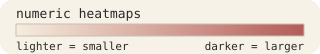
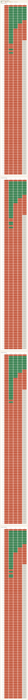
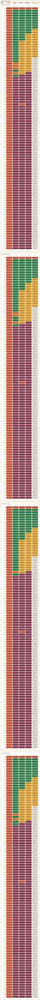
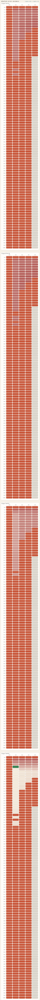
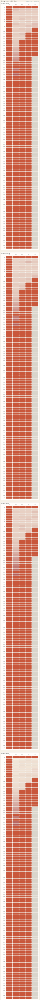
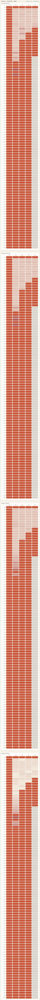
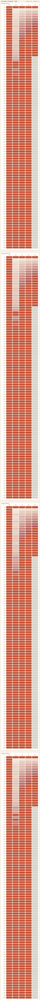
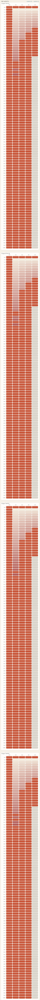
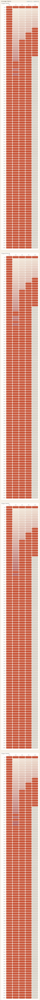
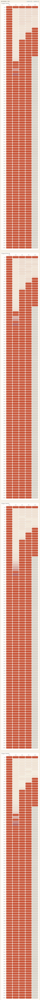
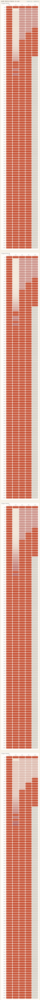
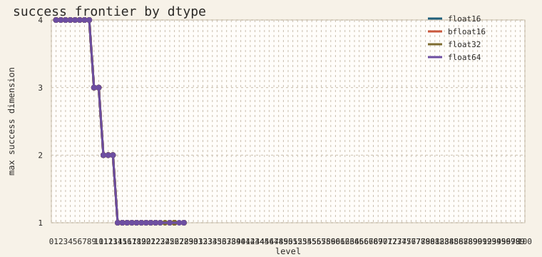